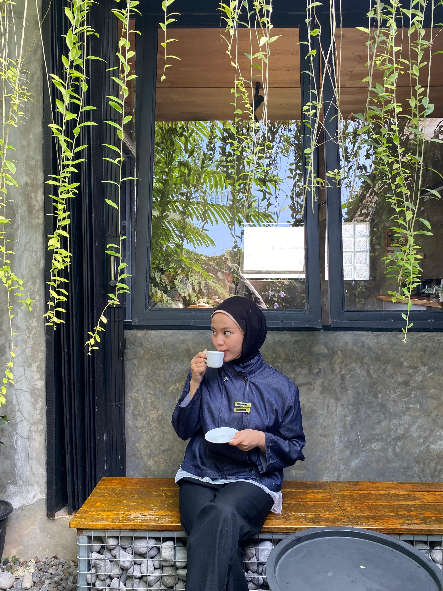

Tugas Pemrograman Web 1
Proyek ini adalah pembuatan halaman profil dan form interaktif menggunakan struktur elemen semantik HTML, tabel terstruktur, dan beberapa elemen input form.

Halo! Nama saya Wilda Lutfiana. Saya adalah seorang mahasiswa yang sedang menempuh pendidikan di perguruan tinggi. Saya adalah mahasiswa aktif Program Studi Sistem Informasi di Universitas Dian Nuswantoro. Saya mengambil jurusan Sistem Informasi karena saya tertarik dengan perkembangan teknologi dan bagaimana teknologi dapat digunakan untuk membantu berbagai kebutuhan manusia.
Saat ini saya sedang mempelajari berbagai materi dalam perkuliahan Sistem Informasi, seperti pemrograman, basis data, analisis dan perancangan sistem, serta teknologi informasi. Melalui perkuliahan dan berbagai tugas yang diberikan,saya berusaha memahami setiap materi dengan baik dan meningkatkan kemampuan saya di bidang teknologi informasi. Sebagai mahasiswa Sistem Informasi, saya ingin terus mengembangkan pengetahuan dan keterampilan yang saya miliki. Saya berharap ilmu yang diperoleh selama kuliah dapat menjadi bekal untuk menghadapi dunia kerja dan membantu saya dalam menciptakan atau mengembangkan sistem informasi yang bermanfaat di masa depan.
| Tingkat Pendidikan | Nama Instansi | Tahun | Keterangan |
|---|---|---|---|
| Sekolah Dasar (SD) | SD N 1 Tosari. | 2013 - 2019 | Lulus |
| Sekolah Menengah Pertama (SMP) | SMP N 2 Brangsong. | 2019 - 2022 | Lulus |
| Sekolah Menengah Kejuruan (SMK) | Smk Bina Utama. | 2022 - 2025 | Jurusan PPLG |
| Perguruan Tinggi (S1) | Universitas Dian Nuswantoro | 2025 - 2028 | Sistem Informasi |
| No | Kegiatan | Deskripsi | Tahun |
|---|---|---|---|
| 1 | Praktik Kerja Lapanganr | Lapas Terbuka Kleas IIB Kendal. | 2023 |
| 2 | Sertifikasi Okupasi Asisten Pemrograman Junior | Menerapkan operasi CRUD (Create, Read, Update, Delete) dalam pemrograman. | 2024 |
| 3 | Pekan Budaya Santri | Menghafal & Melafalkan Juz 30. | 2025 |
| 4 | Basic Training for Next Generation | Belajar tentang Mobile App. | 2025 |
| 5 | Proyek Kelompok | Mengerjakan projek bersama selama perkuliahan | 2026 |
| 3 | Praktikum | Mempelajari dasar-dasar pengembangan web | 2026 |
Proyek ini adalah pembuatan halaman profil dan form interaktif menggunakan struktur elemen semantik HTML, tabel terstruktur, dan beberapa elemen input form.
Silakan isi form di bawah ini untuk mengirimkan pesan: